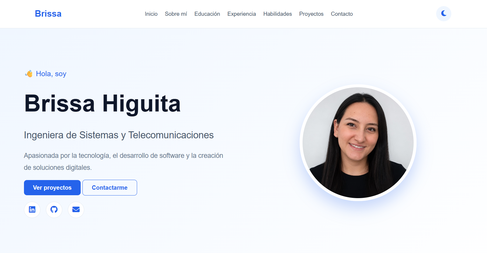

Desarrollo de software
Programación y desarrollo de software.
- Curso de programación básica
- Python Esencial
- Python for Data Science Essential Training Part 1
- Python for Data Science Essential Training Part 2
👋 Hola, soy
Apasionada por el desarrollo de software, la automatización y la creación de soluciones tecnológicas. Me interesa transformar ideas y necesidades en herramientas digitales eficientes, utilizando la tecnología para aprender, innovar y generar valor.
Ingeniera de Sistemas y Telecomunicaciones con experiencia en soporte técnico de primer y segundo nivel, aseguramiento de la calidad (QA), pruebas funcionales y de regresión, documentación técnica y resolución de incidencias.
Cuento con conocimientos en desarrollo y análisis de datos, utilizando tecnologías como Python, Java, SQL, PostgreSQL, MySQL, Git y AWS. También tengo experiencia en procesos ETL, automatización de pruebas con Selenium, análisis de datos con Power BI y automatización de procesos mediante Power Automate.
Me caracterizo por mi capacidad analítica, orientación a resultados, organización y aprendizaje continuo, aportando soluciones eficientes que contribuyen a la mejora de procesos y a la estabilidad de las aplicaciones.
Desarrollo de soluciones frontend y backend utilizando HTML, CSS, JavaScript, Java y Python, con conocimientos en APIs REST, Git y bases de datos.
Ejecución de pruebas funcionales y de regresión, diseño de casos de prueba y automatización con Selenium y Playwrigth.
Gestión y análisis de datos mediante SQL, PostgreSQL, procesos ETL y herramientas como Power BI.
Soporte técnico, resolución de incidencias, análisis de causas y validación de aplicaciones en AWS.
Estudios realizados dentro de mi proceso de formación basica y profesional.
Universidad de Manizales
Formación enfocada en el desarrollo de software, telecomunicaciones, bases de datos, infraestructura tecnológica y gestión de soluciones informáticas.
Universidad de Manizales
Breve descripción de la formación realizada.
Universidad de Manizales
Breve descripción de la formación realizada.
Institución educativa nacional auxiliares de enfermeria
Cursos, certificaciones y programas de formación orientados al aprendizaje continuo y al fortalecimiento de mis competencias profesionales.
Programación y desarrollo de software.
Análisis de datos, inteligencia de negocios y automatización de procesos.
Formación en calidad de software, análisis funcional y fundamentos de seguridad informática.
Formación en idiomas para fortalecer la comunicación y el desarrollo profesional.

Portafolio web personal interactivo desarrollado con HTML, CSS y JavaScript, diseñado para presentar mi perfil profesional, habilidades, experiencia, formación y proyectos de forma moderna y responsive. Integra funcionalidades interactivas y un sistema de contacto mediante EmailJS, permitiendo a los visitantes enviar mensajes directamente a mi correo electrónico.

Agrega aquí la descripción de uno de tus proyectos relacionados con automatización de procesos o pruebas.

Agrega aquí la información de un proyecto relacionado con bases de datos, ETL o procesamiento de información.
Si deseas comunicarte conmigo,puedes encontrarme a través de los siguientes medios.